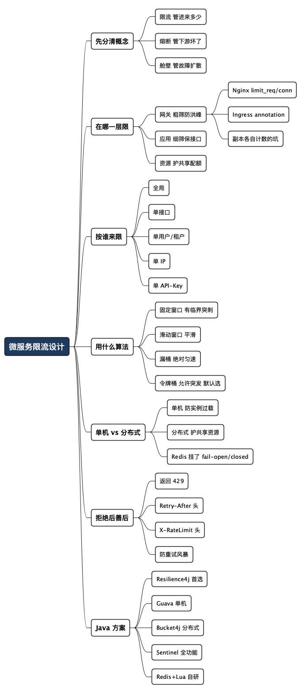

限流这件事，从来不是"每秒放几个"这么简单
Posted on 一 06 7月 2026 in Tech
| Abstract | 限流这件事，从来不是"每秒放几个"这么简单 |
|---|---|
| Authors | Walter Fan |
| Category | Tech |
| Version | v1.0 |
| Updated | 2026-07-06 |
| License | CC-BY-NC-ND 4.0 |
限流这件事，从来不是"每秒放几个"这么简单
先讲个我亲历的故障。有年做一个对外的开放接口，压测跑得漂漂亮亮，上线也太太平平。直到某天，一个合作方的脚本写出了 bug——重试逻辑没退避，一秒钟往我们这儿砸了几万次请求。结果不是这一个接口挂，是整个服务挂了：它把数据库连接池占满，把线程占满，连带那些跟它八竿子打不着的接口一起 502。
复盘会上有人问："咱们不是加了限流吗？"加了。可我们加的是"整个服务每秒 5000 QPS"这么一个数字。这个合作方一个人就把 5000 的额度吃光了，剩下几百个正常客户全被挡在门外。限流是生效了，但它保护错了对象。
这件事让我明白一个道理：限流从来不是配一个"每秒放几个"的数字这么简单。 它是分层的、分维度的、分策略的——你得想清楚"在哪一层限、按谁来限、用什么算法、拒了之后怎么办"。这篇就把这几件事一件件拆开讲，最后给你一张能照着抄的决策清单。
先约定几个词，怕有读者不熟： - 限流（Rate Limiting）：主动控制"单位时间内放多少请求进来"，超了就拒绝或排队。像地铁早高峰的限流栏杆。 - QPS：每秒请求数（Queries Per Second），衡量流量大小的常用单位。 - 熔断（Circuit Breaker）：下游坏了就快速失败、不再打无用的调用。跟限流是两回事，后面会区分。
一、先分清：限流、熔断、舱壁不是一回事
很多人把这几个概念搅在一起，配置的时候就容易张冠李戴。用一句大白话各自定位一下：
| 机制 | 管什么 | 一句话比喻 |
|---|---|---|
| 限流 | 进来多少 | 地铁站口的栏杆，人太多就先拦住 |
| 熔断 | 下游坏了怎么办 | 保险丝，电路短路了先跳闸，别把整栋楼烧了 |
| 舱壁 | 故障别扩散 | 船舱的隔水墙，一个舱进水不至于沉船 |
这篇只聊限流。但你得记住：限流只解决"流量太大"，它救不了"下游已经坏了"（那是熔断的活儿），也防不住"一个慢接口拖垮全部资源"（那是舱壁的活儿）。开头那个故障，其实是限流维度错了 + 没做舱壁隔离两个问题叠加。指望一个限流数字包治百病，本身就是误区。
二、第一个维度：在哪一层限流
限流不是只在一个地方做的。一个请求从进门到落地，会穿过好几层，每一层限的东西不一样、目的也不一样。
我习惯把它想成机场安检：大门口先粗筛一遍（防止人群踩踏），到了具体登机口再细查（保护这趟航班）。限流也是这么分层的：
| 层级 | 在哪做 | 限什么 | 目的 |
|---|---|---|---|
| 接入层 / 网关 | Nginx、API Gateway | 粗粒度：总 QPS、单 IP、防 DDoS | 挡住洪峰和恶意流量，别让脏流量进内网 |
| 应用 / 服务层 | 业务代码、框架 | 细粒度：单接口、单用户、单 API-Key | 保护具体的慢接口和业务逻辑 |
| 资源层 | DB、缓存、第三方 API | 保护共享资源的全局配额 | 别把大家共用的数据库/第三方额度打爆 |
关键点：这几层要配合，不能只做一层。
- 只在网关限总量 → 就是我开头踩的坑：一个客户吃光额度，内部一点没防。
- 只在应用层限 → 洪峰流量已经进到内网、建了连接、耗了资源才被拒，晚了。
- 忘了资源层 → 好几个服务共用一个数据库，各自限得好好的，加一块还是把 DB 打趴。
分层的思路，说到底是纵深防御：外层粗筛防洪水，内层细筛保重点，最里层兜底护命根子（共享资源）。
接入层怎么落地：Nginx 和 K8s Ingress
接入层的限流，绝大多数人是靠 Nginx 或 K8s Ingress 实现的，几行配置就能挡住洪峰。这部分给点能直接抄的例子（不写运维的读者可以跳过，不影响结论）。
原生 Nginx 用 limit_req（限速率）和 limit_conn（限并发连接）两个模块：
http {
# 按客户端 IP 限，每秒 10 个请求；也可以按请求头 $http_x_api_key 限
limit_req_zone $binary_remote_addr zone=perip:10m rate=10r/s;
server {
location /api/ {
# burst=20 是突发缓冲（相当于令牌桶的"桶容量"）
# nodelay 让突发请求立即处理，不强制匀速排队
limit_req zone=perip burst=20 nodelay;
limit_req_status 429; # 限流返回 429，别用默认的 503
proxy_pass http://backend;
}
}
}
有个细节值得记：Nginx 底层是漏桶，只有加上 burst + nodelay 才接近令牌桶那种"允许合理突发"的效果。只写 burst 不写 nodelay，超出的请求会被强制匀速放行，客户端会莫名其妙觉得"怎么突然变慢了"。
K8s ingress-nginx 则是把上面这套配置包装成了 annotation：
metadata:
annotations:
nginx.ingress.kubernetes.io/limit-rps: "10" # 每秒请求数（按 IP）
nginx.ingress.kubernetes.io/limit-connections: "5" # 单 IP 并发连接数
nginx.ingress.kubernetes.io/limit-burst-multiplier: "3" # 突发倍数
nginx.ingress.kubernetes.io/limit-whitelist: "10.0.0.0/8" # 白名单不限流
但这里藏着一个正好呼应后面"单机 vs 分布式"那节的大坑：ingress-nginx 默认是每个 Controller 副本各自计数的。你配了每秒 10 个，部署了 3 个副本，实际限额约等于 10 × 3 = 30。想精确全局限流，要么接共享存储，要么干脆别指望 Ingress——把精确配额下沉到服务层用 Redis 做。其他 Controller 里，APISIX、Kong 的插件支持接 Redis 做真正的分布式限流，Envoy/Istio 的 global rate limit 做得最正规。
一句话选型： 挡洪峰、防刷、粗粒度按 IP 限，用 Nginx / Ingress annotation 简单够用；要精确的全局配额、按业务逻辑限，别指望接入层，下沉到服务层 + Redis。
三、第二个维度：按谁来限流
这是开头那个故障最核心的教训。"每秒放几个"必须先回答"给谁放"。 同样一个 5000 QPS，你是所有人共享这 5000，还是每个客户各有配额，结果天差地别。
常见的限流维度（可以叠加使用）：
- 全局：整个服务/接口的总量。防止系统整体过载。
- 单接口：某个特定接口单独限。专治那种又慢又重的接口，别让它拖累别人。
- 单用户 / 单租户：每个用户或每个企业客户各有额度。保证公平——不让一个人吃垮所有人。
- 单 IP：按来源 IP 限。防爬虫、防刷，但注意 NAT/代理后面可能一堆人共用一个 IP，容易误伤。
- 单 API-Key / 单应用：对外开放平台的标配，按调用方的密钥分配配额，还能分等级（免费版 vs 付费版）。
回到我那个故障：正确的做法应该是全局限总量 + 按 API-Key 限单个客户双层叠加。总量保护系统不过载，单 Key 配额保证任何一个客户都吃不垮别人的份额。这两个维度缺一个，都会出事。
一句话：限流先分蛋糕，再定速度。 不先想清楚"额度按谁分"，配多大的数字都是给某个异常客户开的绿灯。
四、第三个维度：用什么算法
到这一步才轮到"每秒放几个"的具体实现。常见四种算法，各有脾气：
| 算法 | 原理 | 优点 | 缺点 |
|---|---|---|---|
| 固定窗口 | 每个时间窗内计数，超了就拒 | 实现最简单 | 窗口交界处有"临界突刺"，瞬间可达 2 倍 |
| 滑动窗口 | 窗口切小格，滑动统计 | 平滑，消除临界突刺 | 存储/计算开销略大 |
| 漏桶 | 请求入桶，恒定速率流出 | 输出绝对匀速 | 应对不了合理的突发 |
| 令牌桶 | 按速率放令牌，请求取令牌 | 允许突发又能限均值 | 参数要调 |
什么叫"临界突刺"？ 举个例子，固定窗口限"每分钟 100 次"。如果一个客户在第 59 秒打了 100 次，又在下一分钟的第 1 秒打了 100 次——两次都没超窗口限制，但实际上 2 秒内来了 200 次。滑动窗口就是为了解决这个漏洞。
默认选令牌桶。 真实业务流量不是匀速的，是一阵一阵的——用户白天多晚上少，活动一开瞬间冲高。令牌桶用"桶容量"容忍这种正常突发，又用"放令牌的速率"限住长期均值，最贴合真实形态。漏桶那种绝对匀速，反而只适合"我下游必须匀速处理"的场景（比如按固定速率写库、发消息）。
五、第四个维度：单机还是分布式
微服务基本都是多实例部署，这里有个特别容易翻车的坑。
你配了"每秒 100 个"，如果是单机限流，每个实例各限 100——部署了 10 个实例，实际总量就是 1000。更麻烦的是自动扩缩容：实例从 10 个缩到 5 个，总限额悄悄从 1000 变成 500，你配置文件一个字没改，行为却变了。
- 单机限流：每个实例各自计数。简单、无外部依赖、快。适合"只想防单个实例被打爆"。
- 分布式限流：所有实例共享一个计数器（通常放 Redis）。能精确控制全局速率。适合"要保护共享的下游资源"。
选型原则很简单： - 目的是防止单实例过载 → 单机限流够了，别自找麻烦。 - 目的是保护共享资源（数据库、第三方 API 的全局配额）→ 必须分布式，否则每个实例都以为自己没超，加一块就爆了。
但分布式限流有代价：每次请求都要访问 Redis，高频轻量接口反而可能被 Redis 拖成瓶颈。折中办法是本地令牌预取——实例一次性从 Redis 批发一批额度，在本地慢慢用完再来批发，减少网络往返。
还有个必须提前想清楚的问题：Redis 挂了怎么办？ 两个选择—— - fail-open（放行）：Redis 不可用时不限流，保可用性，但失去保护。 - fail-closed（拒绝）：Redis 不可用时全拒，保护住了但服务等于挂了。
没有标准答案，取决于你更怕"被打爆"还是"误伤正常用户"。但你必须在出事之前就决定好，别等 Redis 半夜宕机时才在告警群里现场吵。
六、拒绝之后，别忘了好好告诉客户端
限流最容易被忽略的一环：拒了之后怎么回复。 很多人限流直接返回 500 或者干脆丢弃连接，这是在给自己埋雷。
客户端不知道自己被限流了，只当是服务出错，于是——疯狂重试。重试的流量叠加到原本就过载的系统上，形成"重试风暴"，越限越崩。我见过好几次雪崩，根子就在这儿。
正确的姿势：
- 返回 HTTP 429 Too Many Requests，明确告诉对方"是你太快了，不是我坏了"。
- 带上
Retry-After头，告诉客户端"过 X 秒再来"。 - 带上限流额度信息头，让客户端能自我节流：
X-RateLimit-Limit：你的总额度X-RateLimit-Remaining：还剩多少X-RateLimit-Reset：额度什么时候重置
HTTP/1.1 429 Too Many Requests
Retry-After: 5
X-RateLimit-Limit: 100
X-RateLimit-Remaining: 0
X-RateLimit-Reset: 1720248900
补一句：
X-RateLimit-*是业界用了多年的事实约定，各家 API（GitHub、Twitter 等）大多长这样。IETF 其实还在推一份去掉X-前缀的标准草案（RateLimit-Limit/RateLimit-Remaining/RateLimit-Reset，见 draft-ietf-httpapi-ratelimit-headers），截至我写这篇时还没正式成为 RFC。现阶段用带X-的老写法最稳妥，心里知道有个新标准在路上就行。
配合客户端的指数退避重试（每次重试间隔翻倍，加点随机抖动），才能真正把重试风暴摁下去。限流和客户端行为是一对搭档，只管拒绝不管善后，等于把问题从服务端甩给了全网。
七、Java 生态怎么落地
前面讲的是"设计怎么想"，这一节讲"代码怎么写"。不写 Java 的读者可以跳过，不影响前面的结论。Java 里成熟方案不少，按场景对号入座：
1. Resilience4j —— Spring Boot 项目默认首选。 轻量、函数式，限流/熔断/舱壁/重试一整套都有。局限是默认单机限流。
RateLimiterConfig config = RateLimiterConfig.custom()
.limitForPeriod(100) // 每个周期允许 100 次
.limitRefreshPeriod(Duration.ofSeconds(1)) // 周期 1 秒
.timeoutDuration(Duration.ofMillis(500)) // 拿不到许可最多等 500ms
.build();
@RateLimiter(name = "backendService", fallbackMethod = "fallback")
public String callBackend() {
return backendClient.doSomething();
}
public String fallback(RequestNotPermitted ex) {
return "系统繁忙，请稍后再试"; // 这里应返回 429
}
2. Guava RateLimiter —— 最简单的单机方案。 令牌桶实现，一行搞定。适合单机、简单场景，进程重启即重置。
RateLimiter limiter = RateLimiter.create(100.0); // 每秒 100 个令牌
if (limiter.tryAcquire()) {
handleRequest();
} else {
reject429();
}
3. Bucket4j —— 分布式限流首选。 令牌桶，配合 bucket4j-redis 能让多实例共享同一个桶，这是 Java 里做精确分布式限流最成熟的选择。
4. Sentinel —— 阿里开源，功能最全。 限流/熔断/热点参数限流/系统自适应保护，带控制台能动态调规则。它的"热点参数限流"很实用——比如针对某个爆款商品 ID 单独限，而不是一刀切。适合大规模、需要运营态动态调整的场景，代价是概念比 Resilience4j 重。
5. Redis + Lua 自研 —— 最灵活。 用 Lua 脚本保证计数的原子性，规则完全自己掌控。适合有特殊需求、已有 Redis 基础设施的团队。上面那些库底层思路其实都类似。
选型速查：
| 需求 | 选它 |
|---|---|
| Spring Boot，要限流+熔断+舱壁一套 | Resilience4j |
| 单机、简单、快速接入 | Guava RateLimiter |
| 精确的分布式限流 | Bucket4j + Redis |
| 大规模、要动态调规则、热点限流 | Sentinel |
| 有特殊规则、要完全掌控 | Redis + Lua 自研 |
八、一张能照着抄的限流决策清单
把前面几节浓缩成一份 checklist，下次设计限流时按这个顺序问自己：
先想清楚（设计） - [ ] 在哪几层限？网关粗筛 + 应用细筛 + 资源兜底，至少想两层。 - [ ] 按谁限？全局 / 单接口 / 单用户 / 单 IP / 单 Key——通常要叠加，尤其别忘了"单客户配额"。 - [ ] 用什么算法？默认令牌桶；要绝对匀速才用漏桶；固定窗口小心临界突刺。 - [ ] 单机还是分布式？保护共享资源才上分布式，否则单机就够。 - [ ] 阈值来自压测数据，不是拍脑袋。
代码里落实（实现）
- [ ] 拒绝返回 429，不是 500。
- [ ] 带 Retry-After 和 X-RateLimit-* 头。
- [ ] 分布式限流的 Redis 调用有超时，并想好 fail-open 还是 fail-closed。
- [ ] 高频接口考虑本地令牌预取，别每次都查 Redis。
上线之后（运营） - [ ] 阈值可动态配置，别硬编码到代码里。 - [ ] 限流事件埋点告警——频繁触发往往是容量不足或被攻击的信号。 - [ ] 给重要客户/接口留白名单或独立配额。 - [ ] 配合客户端指数退避，防重试风暴。
一句话：
限流不是一个数字，是一套分层、分维度、有善后的策略。 配数字之前，先回答"在哪层、给谁、拒了怎么办"这三个问题。
写在最后
回头看我开头那个故障，根子从来不是"限流的数字配小了"，而是我把一个多维度的策略问题，简化成了一个一维的数字问题。分层、分维度、算法、单机/分布式、拒绝后的善后——这五件事里少想一件，限流就会在你最想不到的地方漏风。
好的限流，像一个训练有素的门卫：既拦得住洪水和坏人，又不会把老熟客挡在门外，还会礼貌地告诉被拦下的人"您稍等五分钟再来"。配好这么一个门卫，比配一个冷冰冰的数字，难得多，也值得多。
你的系统限流，是"一个数字"，还是"一套策略"？
全文思维导图
@startmindmap
<style>
mindmapDiagram {
node {
BackgroundColor #F8F9FA
RoundCorner 10
Padding 10
FontSize 13
}
:depth(0) {
BackgroundColor #1E3A5F
FontColor white
FontSize 18
FontStyle bold
}
:depth(1) {
FontSize 15
FontStyle bold
}
:depth(2) {
FontSize 13
}
}
</style>
* 微服务限流设计
** 先分清概念
*** 限流 管进来多少
*** 熔断 管下游坏了
*** 舱壁 管故障扩散
** 在哪一层限
*** 网关 粗筛防洪峰
**** Nginx limit_req/conn
**** Ingress annotation
**** 副本各自计数的坑
*** 应用 细筛保接口
*** 资源 护共享配额
** 按谁来限
*** 全局
*** 单接口
*** 单用户/租户
*** 单 IP
*** 单 API-Key
** 用什么算法
*** 固定窗口 有临界突刺
*** 滑动窗口 平滑
*** 漏桶 绝对匀速
*** 令牌桶 允许突发 默认选
** 单机 vs 分布式
*** 单机 防实例过载
*** 分布式 护共享资源
*** Redis 挂了 fail-open/closed
** 拒绝后善后
*** 返回 429
*** Retry-After 头
*** X-RateLimit 头
*** 防重试风暴
** Java 方案
*** Resilience4j 首选
*** Guava 单机
*** Bucket4j 分布式
*** Sentinel 全功能
*** Redis+Lua 自研
@endmindmap

本作品采用知识共享署名-非商业性使用-禁止演绎 4.0 国际许可协议进行许可。 欢迎在我的个人网站 https://www.fanyamin.com 访问原文并评论。